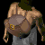
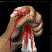
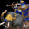
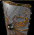
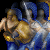

RM Brawl 1.7 Patch Notes
Multiple reverts and changes to match AOE:DE
Change-logs have been updated to match patch 1.7
Check this to see what all has changed since AOE Rise of Rome 1.0a
Check this to see what all has changed since UPatch 1.1 R4
Villagers and economy
Linen cloth had an expensive build patch but wasn't offering enough value pre 15 min Tool age.
 Linen Cloth
Linen Cloth
Armor base melee +1 -> +2
 Akinaka -> Aegean Dagger
Akinaka -> Aegean Dagger
Bonus damage +2 -> +1
Bonus hit points +20 -> +15
 Jihad
Jihad
Villager bonus hit points +35 -> +15
 Pottery
Pottery
Food cost 150 -> 130
Foragers work rate +20% -> +30%
 Hunter
Hunter
Work rate 0.486 -> 0.4725
Towers
Using towers without any army was too passive and simple way to counter rushes.
Watch tower (research)
Research time 10s -> 80s
 Sentry tower (research)
Sentry tower (research)
Research time 30s -> 100s
Guard tower (research)
Research time 75s -> 120s
 Ballista tower
Ballista tower
Attack base pierce 20 -> 11
Reload time 3.0 -> 2.0
Ballista tower (research)
Stone cost 750 -> 600
Food cost 1800 -> 750
Bronze Age units
Now Cavalry doesn't need to rely so heavily on the firs few minutest of Bronze Age to deal it's damage.
 Improved Bow (research)
Improved Bow (research)
Research time 45s -> 60s
 Chariot Archer
Chariot Archer
Training time 46s -> 55s
Hit points 63 -> 70 (revert)
 Cavalry (revert)
Cavalry (revert)
Hit points 140 -> 150
 Priest (revert)
Priest (revert)
Training time 90s -> 50s
Gold cost 90 -> 125
Temple (revert)
Wood cost 150 -> 200
logistics (partial revert)
Food cost 220 -> 180
Gold cost 140 -> 100
Iron Age units
Heavy Cavalry wasn't strong enough.
Now Armored Elephant is heavier tied to a late game
Martyrdom
Gold cost 600 -> 400
Research time 150s -> 100s
 Heavy Cavalry
Heavy Cavalry
Hit points 150 -> 165
Attack base melee 10 -> 11
 Heavy Cavalry (research)
Heavy Cavalry (research)
Research time 90s -> 75s
Elephant Archer
Reload time 1.3 -> 1.5
Attack base pierce 5 -> 6
 Armored Elephant (research)
Armored Elephant (research)
Research time 200s -> 150s (revert)
Requirement Iron Shield -> Coinage
 Iron Shield (revert)
Iron Shield (revert)
Research time 60s -> 75s
Tower Shield (revert)
Research time 75s -> 100s
Food cost 220 -> 250
Gold cost 340 -> 400
Water and siege units
Alchemy now grants meaningful bonuses to siege units, towers and ships making it a good technology to balance out civilizations.
 Scout ship, War Galley & Trireme
Scout ship, War Galley & Trireme
Armor slinger none -> -2
Trireme
Attack base pierce 12 -> 11
Reload time 1.98 -> 2.0
 Stone Thrower, Catapult & Heavy Catapult
Stone Thrower, Catapult & Heavy Catapult
Relaod time 5.75 -> 5.0
 Catapult Trireme & Juggernaught
Catapult Trireme & Juggernaught
Relaod time 5.6 -> 5.0
Attack buildings 35 -> -45
Attack base melee none -> 40
 Helepolis
Helepolis
Relaod time 1.98 -> 2.0
 Alchemy
Alchemy
Trireme & Ballista Tower bonus base pierce damage +1 -> +2
All catapults bonus base melee damage +1 -> +2
All siege ships bonus base melee damage none -> +2
All siege ships bonus building damage +1 -> none
Attack bonuses
All chariot units were too strong counters to Priest.
 Priest
Priest
Armor Priest -9 -> -5
 Chariot Archer
Chariot Archer
Attack Priest -5 -> -3 (4 -> 2)
 Chariot
Chariot
Attack Priest -2 -> -1 (7 -> 4)
 Scythe Chariot
Scythe Chariot
Attack Priest 0 -> 0 (9 -> 5)
Clubman, Axeman, Short Swordsman, Broad Swordsman, Long Swordsman & Legion
Armor infantry -9 -> -12
 Cavalry & Heavy Cavalry
Cavalry & Heavy Cavalry
Attack infantry -3 -> -4 (6 -> 8)
 Cataphract
Cataphract
Attack infantry 0 -> 0 (9 -> 12)
Other changes
Slingers were too weak.
Now Hill Country is better map for beginners.
 Slinger
Slinger
Stone cost 20 -> 15
Food cost 40 -> 45
Reload time 1.75 -> 1.7
 Hill Country
Hill Country
Player berry bushes 6-8 -> 8
Map berry bushes 5-7 -> 6-8
Player Gazelle pack 6 -> 8
New elephant spawn Distance from TC 12-18
 Fish whale
Fish whale
Effective Food amount 300 -> 300
Work rate 0.48 -> 0.4 (revert)
Civilizations
Reverting all unnecessary or little affecting changes.
All civilizations
Stone on start 150 -> 120
Assyrian
Technologies disabled Improved bow, Alchemy
Technology enabled Afterlife
Babylonian
Bonus Towers have +75% HP -> +40% HP
Choson
Technology disabled Alchemy
Technology enabled Catapult Trireme
Egyptian
Technology enabled Catapult
Greek
Bonus removed Alchemy available at Bronze Age
Technology disabled improved Bow
Technology enabled Catapult Trireme
Hittite
Bonus removed All chariots have -25% HP
Bonus All chariots dismount on death: dismounts into a new unit (Infantry class, hero Jason skin).
This unit has 5/7 AD, 0/2 armor and 40/60 HP (Bronze/Iron age respectively).
Technologies enabled Architecture, Iron Shield, Tower Shield
Macedonian
Technology disabled Armored Elephant
Technology enabled Catapult
Minoan
Technologies disabled Astrology, Mystics, Alchemy
Technologies enabled Iron Shield, Tower Shield, Trireme, Siegecraft, Heavy Catapult
Bonus Ships cost -20% -> -15%
Palmyra
Technologies disabled Ballistics, Alchemy
Technologies enabled Iron Shield, Guard Tower, Jihad
Persian
Bonus Hunted animals grant +75% more food -> +40% more food
Technology disabled Alchemy
Phoenician
Bonus removed Catapult Trireme and Juggernaught fire 40% faster
New Bonus All Temple technologies give bonus HP to Priests (Max 82 HP)
Technologies disabled Catapult Trireme, Juggernaught, Ballistics
Technologies enabled Guard Tower
Roman
Bonus Towers cost -40% -> -30%
New bonus Town Centers cost reduction -15% takes effect after Tool Age
Technologies disabled Alchemy, Irrigation
Technology enabled Jihad
Shang
Technologies enabled Guard Tower, Aristocracy
Sumerian
Bonus Farms have +125 food -> +75 food
Technologies disabled Bronze Shield, Coinage, Fanaticism, Legion, Alchemy
Technologies enabled Aristocracy, Centurion
Yamato
Technology enabled Architecture
Bug fixes
 Shang
Shang
Shang had unintended +75 food bonus for farms.